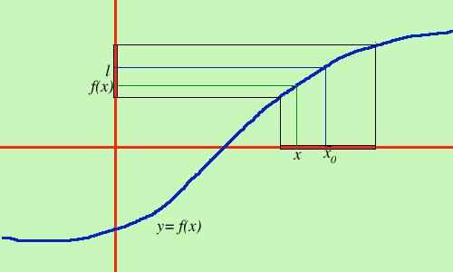

Limite finito di una funzione in un punto
Il concetto espresso nella pagina precedente e' abbastanza comprensibile, diventa piu'
complicato l'esprimerlo in forma matematica
Per prima cosa, siccome si parla di limite di una funzione e la funzione e'come variano
i punti sull'asse y partiremo da un intervallo sull'asse y e diremo che allo stringersi
di un intervallo sulle y avvicinandosi ad un valore l si stringe anche l'intervallo
corrispondente sulle x avvicinandosi ad x0

Per dire questo consideriamo sull'intervallo delle X (quello marcato piu' scuro) un qualunque punto x a cui corrisponde f(x) sull'asse Y.
Per rendere piccoli gli intervalli bastera' dire che deve essere piccola la distanza tra f(x) ed l e
contemporaneamente la distanza ta x ed x 0;
ora la distanza si ottiene facendo la differenza fra le coordinate, ma essendo sempre positiva,
dovra' essere presa in modulo.
Quindi bastera' dire che quando la distanza sulle Y e' minore di un numero piccolissimo anche la distanza sulle X
dovra' essere minore di un numero piccolissimo, od in modo equivalente quando f(x) si avvicina ad l
anche x si avvicina ad x0.
Ora siamo pronti a dare la definizione matematica:
Si dice che la funzione y=f(x) ammette limite finito l per x tendente ad x0 e si scrive:
limx->x0 f(x)=l
se per ogni numero positivo
 (epsilon) piccolo a piacere esiste un numero (epsilon) piccolo a piacere esiste un numero  (delta epsilon cioe' delta dipendente da epsilon) tale che da (delta epsilon cioe' delta dipendente da epsilon) tale che da
|f(x)-l|<
segua
|x-x0 |
<
|f(x)-l|< e' un intervallo B sull'asse y
|x-x0 |
< e' un intervallo A sull' asse x, intorno completo del punto x0 con numero dipendente da
quindi si puo' anche dire che quando la x appartiene ad A allora f(x) appartiene ad B
od anche: quando x si avvicina ad x0 allora f(x) si avvicina ad l
Esercizi sulla definizione di limite
|